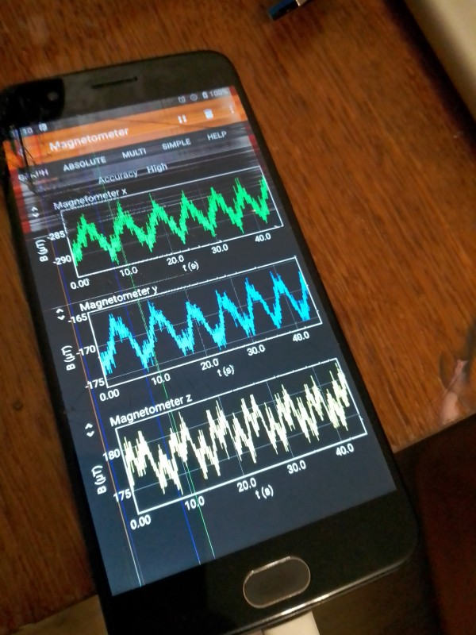
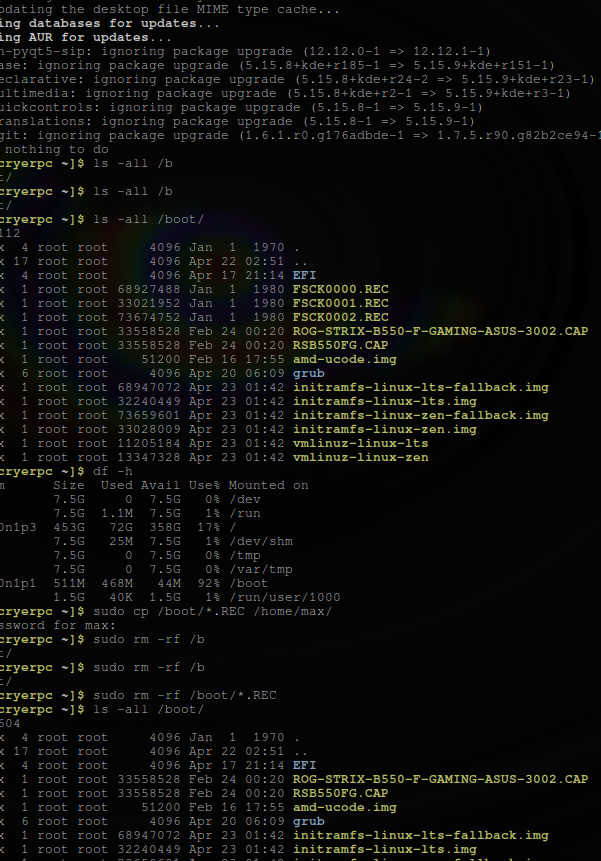

Поліція:
Зі статті 42. Заходи поліцейського примусу
1. Поліція під час здійснення повноважень, визначених цим Законом, має право застосовувати такі заходи примусу: 1) фізичний вплив (сила); 2) застосування спеціальних засобів; 3) застосування вогнепальної зброї.
- Фізичний вплив - це застосування будь-якої фізичної сили, а також спеціальних методів боротьби з метою припинення протиправних дій правопорушників.
- Спеціальні засоби як заходи поліцейського примусу - це сукупність пристроїв, пристроїв і предметів, спеціально виготовлених, конструктивно призначених і технічно придатних для захисту людей від ушкоджень різними предметами (у тому числі зброєю), тимчасового (зворотного) ушкодження особи (правопорушника, супротивник), придушення або обмеження волі особи (психологічної чи фізичної) шляхом впливу на неї або на об'єкти, що її оточують, з чітким регламентуванням підстав і правил застосування таких засобів і службових тварин.
- Для виконання своїх повноважень поліцейські можуть застосовувати такі спеціальні засоби:
- гумові та пластмасові кийки;
- електрошокери контактної та контактно-дистанційної дії;
- засоби обмеження рухливості (наручники, сітки для зв'язування тощо);
- засоби, оснащені сльозогінними та подразливими речовинами;
- засоби примусової зупинки руху;
- спеціальні маркувальні та фарбувальні засоби;
- службові собаки та службові коні;
- світлозвукові прилади, гранати та боєприпаси;
9) засоби акустичного та мікрохвильового впливу;
- пристрої, гранати, боєприпаси та дрібні вибухові пристрої для руйнування перешкод і примусового розкриття приміщень;
- пристрої для стрільби патронами, спорядженими несмертельними гумовими або подібними металевими снарядами;
- засоби, обладнані безпечними димоутворюючими препаратами;
- водомети, бронетехніка та інші спеціальні засоби.
- засоби акустичного та мікрохвильового впливу: використовують без відповідних нормативно-правових актів та з метою отримання прибутку.
Миргородці тепер як ~рондроінди~ Хаббарда, але їхню волю зламали мікрохвилі. Сама поліція стверджує, що мікрохвилі та інші діапазони не можуть завдати шкоди людям, смертельно небезпечні рівні фону – це лише ~добре~. При цьому торгівля людьми просто процвітає і залишається нерозслідуваною та безкарною. Можуть довести до повішення або іншого виду самогубства.
Mob Excess Deterrent Using Silent Audio (MEDUSA) для українців, які не хочуть бути частиною онлайн-піратської мафії: ‘Voice-of-God’ weapons Mirgorod Gogola 139 80 EMF:
From Military Neuroscience and the Coming Age of Neurowarfare 2016, Armin Krishnan.
Багато досліджень мікрохвиль, проведених у 1960-х і 1970-х роках, уже вказали на багато потенційних проблем: тривалий вплив мікрохвиль може спричинити генетичні мутації, пухлини мозку та інші види раку, аномалії поведінки (самогубство), зміни в біологічних циклах, ослаблення імунітету. система та зміни в здатності до навчання (Becker, 1990: 214–215; також Brodeur, 1977). Метадослідження RAND 1970 року щодо неврологічних ефектів мікрохвиль припустило: «здається ймовірним, що функції нервової системи, а отже, і поведінка, справді порушуються мікрохвилями низької інтенсивності… дослідження постійно й неодноразово повідомляють, що люди справді демонструють порушення поведінки під час впливу мікрохвиль низької інтенсивності. (МакГрегор, 1970: 8).
Ці висновки не надто відрізняються від деяких останніх досліджень, які також вказують на зміни мозку та поведінки в результаті тривалого впливу ЕМП. Наприклад, дослідження 2000 року стверджує: «Природні та створені людиною електромагнітні поля впливають на настрій і поведінку здорових і хворих людей. Численні дані свідчать про те, що електромагнітні поля впливають на сон» (Шер, 2000). Інше дослідження 2006 року пов’язало навколишні електромагнітні поля з людським настроєм і поведінкою, виявивши значно підвищений рівень самогубств у періоди геомагнітних бур (Berk et al., 2006). У наукових дослідженнях постійний вплив електромагнітного поля пов’язують із «раком, серцевими захворюваннями, порушеннями сну, депресією, самогубством, гнівом, неконтрольованим гнівом, насильством, вбивством, неврологічними захворюваннями та смертю» (Cherry, 2002). Дослідження британської поліцейської радіосистеми TETRA, підготовлене для Федерації поліції Англії та Уельсу, стверджує, що мікрохвилі на певних частотах можуть викликати параною, депресію, самогубство, маніакальне поведінку та сліпоту (Trower, 2001: 30.).
Можливий "контроль людини", або інша спроба створити зброю з ПК, автор - саєнтологічна/поліцейська піратська мафія:
https://drive.google.com/drive/folders/1ruSHXJEPLg2V-gQ6sZ1cd7pbd4Ksjscy?usp=share_link, можливо, я спробую проаналізувати це пізніше.
Критика наносить шкоду устрою та імені країни та поліція і работорговці після невдач все самовіддано продовжують шукати шлях до створення нової волі у спаленої мікрохвилями жертви.... Можливо просто в Миргороді, Україна, відбуваються такіж самі події які описані в https://www.cs.cmu.edu/~dst/Library/Shelf/wakefield/us-13.html
https://en.wikipedia.org/wiki/Torture_in_Ukraine
https://en.wikipedia.org/wiki/Cruel,_inhuman_or_degrading_treatment
https://en.wikipedia.org/wiki/International_Covenant_on_Civil_and_Political_Rights
https://en.wikipedia.org/wiki/Universal_Declaration_of_Human_Rights
https://en.wikipedia.org/wiki/United_Nations_Convention_Against_Torture
https://uk.wikipedia.org/wiki/%D0%9F%D1%80%D0%B0%D0%B2%D0%B0_%D0%BB%D1%8E%D0%B4%D0%B8%D0%BD%D0%B8_%D0%B2_%D0%A3%D0%BA%D1%80%D0%B0%D1%97%D0%BD%D1%96_(%D0%B4%D0%BE%D0%BF%D0%BE%D0%B2%D1%96%D0%B4%D1%8C)#2014-2018_%D1%80%D0%BE%D0%BA%D0%B8
https://legalaid.gov.ua/novyny/torgivlya-lyudmy-suchasne-rabstvo/